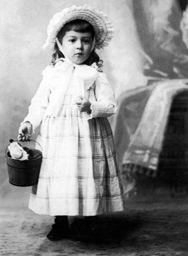
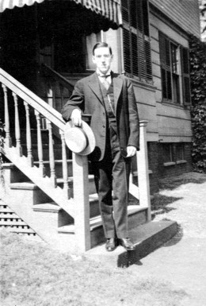
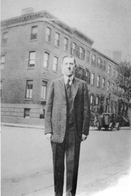
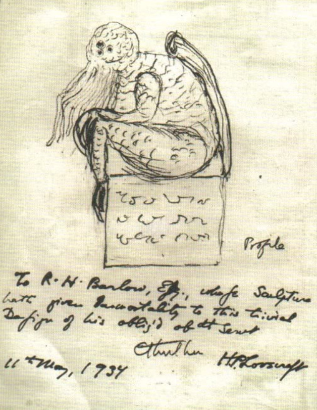

H.P. Lovecraft, el padre del horror cosmico
Hace 136 años nacia Howard Phillips Lovecraft el 20
de agosto de 1890 en Providencia, Rhode Island, fue
un escritor de obras que redefinieron el genero del
terror marcando el inicio de un perdurable legado.
"La más angitua y fuerte emoción de la humanidad es el miedo, y el miedo más antiguo y más fuerte, es el miedo a lo desconocido."
El Origen: Infancia en Providence (1890-1904)
Nacido el 20 de agosto de 1890 en Providence, Rhode Island, la vida de Lovecraft estuvo marcada por la tragedia desde el inicio. Su padre murió en un asilo psiquiátrico cuando Howard era apenas un niño, dejándolo bajo la tutela de una madre sobreprotectora y dos tías. Creció como un niño prodigio, pero de salud frágil. Pasaba las horas en la inmensa biblioteca de su abuelo, sumergiéndose en los clásicos, la astronomía y la mitología árabe. Fue allí donde las semillas de lo desconocido empezaron a germinar.


El refugio en las letras (1905-1923)
Al llegar a la adolescencia, Lovecraft sufrió una crisis nerviosa que le impidió graduarse de la secundaria, un fracaso que le pesó durante toda su vida. Se retiró del mundo exterior y vivió como un ermitaño durante años, comunicándose casi exclusivamente por carta. Su entrada al mundo literario no fue a través de libros, sino del periodismo amateur y las revistas de bajo costo. Se convirtió en un escritor de cartas compulsivo, llegando a intercambiar miles de misivas con otros autores jóvenes a pulir su estilo y a compartir las primeras ideas sobre seres antiguos que habitaban los rincones oscuros del universo.
El amargo paso por Nueva York (1924-1926)
En 1924, la vida de Lovecraft dio un giro inesperado cuando se casó con Sonia Greene y se mudó a la ruidosa ciudad de Nueva York. Sin embargo, lo que parecía un nuevo comienzo se convirtió en una pesadilla personal. Lovecraft, acostumbrado a la tranquilidad de su ciudad natal, se sintió aterrado y asqueado por la multitud, la pobreza y la modernidad de la metrópolis. No logaba encontrar un trabajo estable y vivía en condiciones precarias, alimentándose a veces solo con latas de frijoles. Esta sensación de ser un extraño en un mundo hostil fue fundamental para su obra; allí comprendió que el ser humano es pequeño y vulnerable, una idea que se convertiría en el corazón de su literatura.


El regreso a casa y la creación de los Mitos de Cthulhu (1926–1937)
Tras el fracaso de su matrimonio, regresó a Providence en 1926, donde vivió sus años más creativos pero también los más difíciles económicamente. Fue en este periodo cuando escribió sus historias más famosas, como La llamada de Cthulhu y En las montañas de la locura. A diferencia de otros autores de terror de la época, Lovecraft no escribía sobre fantasmas o demonios religiosos; él inventó el "Horror Cósmico". Sus monstruos eran en realidad seres de otros planetas o dimensiones, tan antiguos y poderosos que la mente humana no podía comprenderlos sin volverse loca. Aunque hoy es un icono, en aquel entonces sus cuentos solo aparecían en revistas baratas y él apenas ganaba lo suficiente para sobrevivir.
Que es el horror cosmico
Lovecraft refinó este estilo para contar historias sobre sus propios "mitos". que comprenden un conjunto de elementos sobrenaturales, mitológicos, humanos y extraterrestres. Su trabajo fue profundamente inspirado por autores anteriores que Lovecraft constantemente leía y admiraba, siendo algunos de ellos Edgar Allan Poe, Algernon Blackwood y lord Dunsany. La base del trabajo de Lovecraft fue el cosmicismo: la filosofía que indica que la vida ordinaria humana es diminuta e insignificante en comparación con la inmensidad de los misterios del Universo. En la búsqueda de la sabiduría o de la comprensión de los secretos del vasto universo en el que vivimos, los descubrimientos que se realizan pueden acabar dañando la cordura de una persona, ya que nuestra mente no esté preparada para asimilarlos. Las historias de Lovecraft usualmente toman lugar en la parte rural de Nueva Inglaterra, es decir, en la sección de Estados Unidos en la que el propio autor crecio.